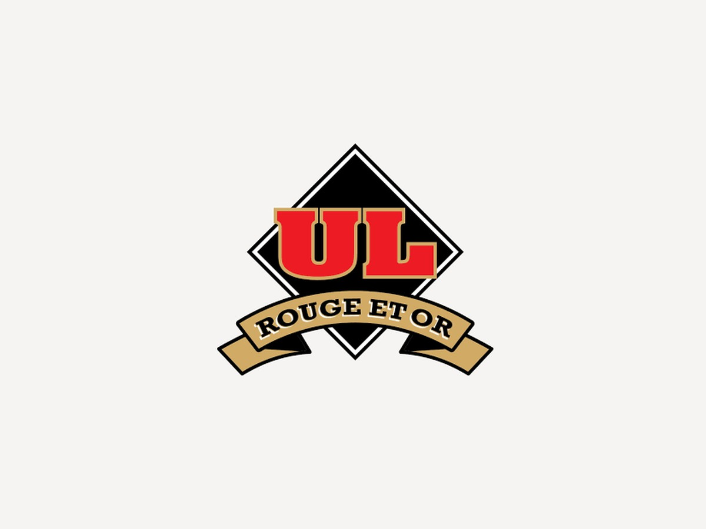

Préparateur physique à Québec · Agent de sécurité à Chambéry
Deux emplois menés en parallèle de ma licence : agent de sécurité à Chambéry, puis préparateur physique de l'équipe de natation de l'Université Laval, à Québec.

Période
Sept. 2023 – mai 2025
Lieu
Chambéry · Québec
Rôle
Jobs étudiants, en parallèle de mes études
01
Préparateur physique · Rouge et Or, Université Laval
Janv. – mai 2025 · Québec, Canada
Encadrement de séances de musculation et de préparation physique pour des groupes allant jusqu'à 15 athlètes de l'équipe universitaire de natation.
Programmes de musculation adaptés au calendrier de compétition et à la charge de travail des nageurs.
Échauffements dynamiques, coaching technique et exercices de prévention des blessures (production de force, stabilité spécifique à la natation).
Suivi en temps réel de la charge et de l'exécution, avec ajustement du volume et de l'intensité selon la performance, la fatigue et le risque de surmenage.
Collaboration avec les entraîneurs pour aligner les séances sur les objectifs de performance.
02
Agent de sécurité
Sept. 2023 – mai 2024 · Chambéry
Surveillance de bars, de lieux sensibles et de férias, en parallèle de ma deuxième année de licence.
03
Ce que j'en retiens
Transmettre et corriger en direct, adapter un plan à des personnes différentes, garder son calme face à un public parfois difficile, et tenir un emploi en même temps que des études exigeantes.